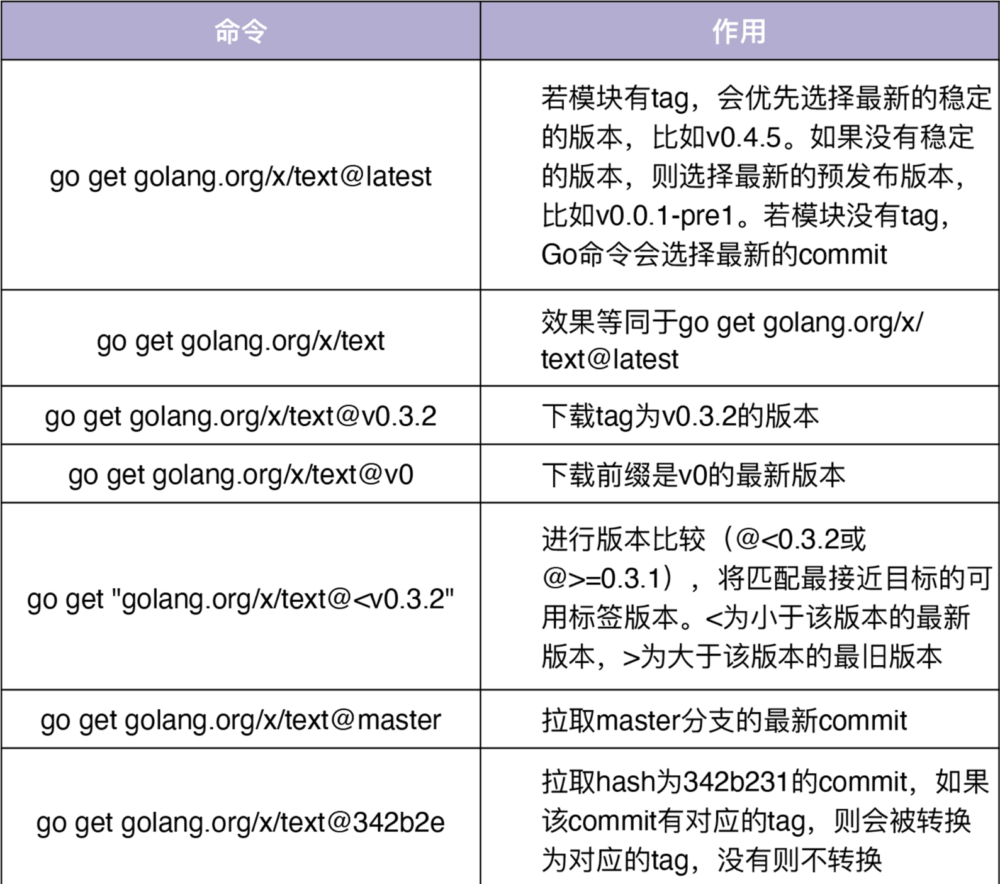
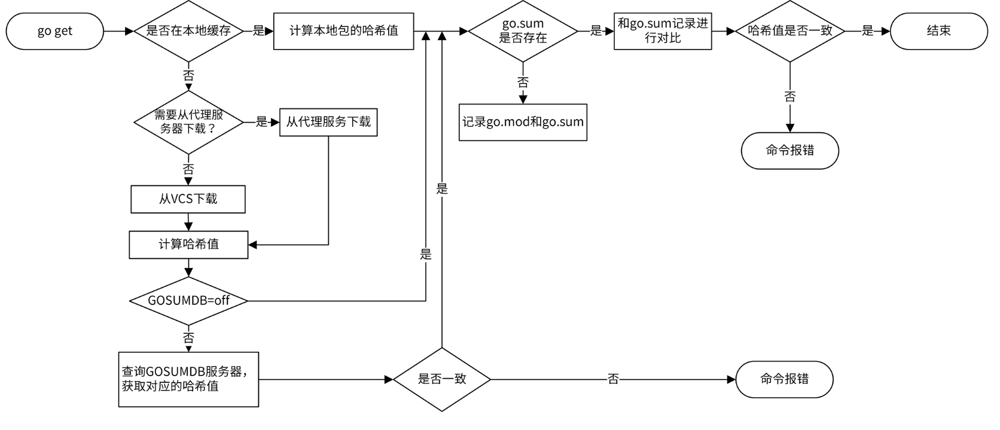

Go Modules依赖包管理
1 go modules 简介
-
Go Modules 是 Go 官方推出的一个 Go 包管理方案。
-
支持版本管理。
-
允许同一个模块多个版本共存。
-
可以校验依赖包的哈希值，确保包的一致性，增强安全性。
-
内置几乎所有的 go 命令，包括 go get、go build 、go install、go run、 go test、go list 等命令。
-
具有 global caching 特性，不同项目的相同模块版本，只会在服务器上缓存一份。
go1.14 之后官方建议在生产环境中使用 go modules。go modules 相关的概念可以总结为 “6-2-2-1-1”
- 六个环境变量：GO111MODULE、GOPROXY、GONOPROXY、GOSUMDB、GONOSUMDB、GOPRIVATE。
- 两个概念：Go module proxy 和 Go checksum database。
- 两个主要文件：go.mod 和 go.sum。
- 一个主要管理命令：go mod。一个 build flag。
2 package 和 模块（module）
- go.mod 中定义了模块的名称及其依赖包。每个依赖包都需要指定导入的路径和语义化版本。
- 模块和包的关系更像是集合和元素的区别，包属于模块，一个模块是零个或者多个包的集合。
go 的包有四种类型：
- go 标准库。
- 第三方包：比如 github 等其他第三方提供的包。
- 匿名包：只导入而不使用的包。只想使用导入包产生的副作用，及引用包级别的变量、常量、结构体、接口等，
- 内部包：项目内部的包，位于项目目录下。
go modules 命令：
- go mod download: 下载 go mod 文件中所有的依赖包。
- go mod edit: 编辑 go mod 文件。
- go mod graph: 查看现有的依赖结构。
- go mod tidy: 添加丢失的模块，并移除无用的模块。默认情况下，Go 不会移除 go.mod 文件中的无用依赖。当依赖包不再使用了，可以使用go mod tidy命令来清除它。
- go mod vendor: 将所有的依赖包存到当前目录下得 vendor 目录。
- go mod verify: 检查当前模块的依赖是否已经存在本地下载的源代码缓存中，以及检查下载后是否有修改。
- go mod why: 为什么需要依赖某模块。
3 下载模块
3.1 代理下载模块
默认情况下，Go 命令从 VCS（Version Control System，版本控制系统）直接下载模块，例如 GitHub、Bitbucket、Bazaar、Mercurial 或者 SVN。
go1.13 版本引入新的环境变量 GOPROXY，用于设置 go 模块代理。代理服务器可以指定多个。
export GOPROXY=https://proxy.golang.org,https://goproxy.cn,direct
设置了 GOPROXY 后，会优先从代理服务器下载模块。如果下载失败，go 命令会尝试从下一个代理服务器下载。
direct 是一个特殊指示符，用来指示 go 回源到模块的源地址（比如 github) 去抓取。当值列表中上一个 Go module proxy 返回 404 或 410，Go 会自动尝试列表中的下一个，遇见 direct 时回源，遇见 EOF 时终止，并抛出类似invalid version: unknown revision…的错误。
如果 GOPROXY=off,go 不会尝试从代理服务器下载模块。
私有仓库设置代理
有的模块需要从私有仓库拉取，通过代理服务器访问会报错，可以将这些模块添加到环境变量 GONOPROXY 中。建议直接设置 GOPRIVATE 环境变量，它的值将作为 GONOPROXY 和 GONOSUMDB 的默认值。
GONOPROXY、GONOSUMDB 和 GOPRIVATE 都支持通配符，多个域名用逗号隔开，例如*.example.com,github.com。
3.2 制定版本号下载
go get 下载模块命令格式为 go get <package[@version]>，如下变所示

go get -u 更新 package 到最新版本， go get -u=patch 只更新小版本，例如从 v1.2.4 到 v1.2.5。
3.3 按最小版本下载
模块 A 依赖 B和C ,模块B 依赖模块 D,模块C依赖，最终整个项目中可能存在重复引用的模块，而且版本不同，如果存在这种情况，通常是选择的较高版本
比如两个模块(v1.3、v1.4)，最终引用 v1.4, 主要因为
- 因为模块 D 的v1.3和v1.4版本变更都属于次版本号的变更，而在语义化版本的约束下，v1.4必须要向下兼容v1.3，因此我们要选择高版本的v1.4。
- 模块导入路径的规范。主版本号不同，模块的导入路径就不一样。所以，如果出现不兼容的情况，主版本号会改变，例如从 v1 变为 v2，模块的导入路径也就改变了，因此不会影响 v1 版本。
4 go.mod
4.1 go.mod 介绍
一个示例 go mod 文件
module github.com/marmotedu/iam
go 1.14
require (
github.com/AlekSi/pointer v1.1.0
github.com/appleboy/gin-jwt/v2 v2.6.3
github.com/asaskevich/govalidator v0.0.0-20200428143746-21a406dcc535
github.com/gin-gonic/gin v1.6.3
github.com/golangci/golangci-lint v1.30.0 // indirect
github.com/google/uuid v1.0.0
github.com/blang/semver v3.5.0+incompatible
golang.org/x/text v0.3.2
)
replace (
github.com/gin-gonic/gin => /home/colin/gin
golang.org/x/text v0.3.2 => github.com/golang/text v0.3.2
)
exclude (
github.com/google/uuid v1.1.0
)
4.2 go mod 语句
go mod 文件中包含了四个语句，module、require、replace和 exclude.
- module: 定义当前项目的模块路径。
- go: 设置预期的 go 版本，目前只是起标识作用。
- require: 设置一个特定的模块版本，格式为 <导入包路径> <版本> [// indirect]。
- exclude: 排除一个特定的模块版本，如果知道某个模块的某个版本有问题，可以使用 exclude 将该版本排除掉。
- replace: 将一个模块版本替换成另外一个模块版本。格式为$module => $newmodule ，$newmodule可以是本地磁盘的相对路径，例如github.com/gin-gonic/gin => ./gin。也可以是本地磁盘的绝对路径，例如github.com/gin-gonic/gin => /home/lk/gin。还可以是网络路径，例如golang.org/x/text v0.3.2 => github.com/golang/text v0.3.2。
虽然我们用$newmodule替换了$module，但是在代码中的导入路径仍然为$module。replace 在实际开发中经常用到，下面的场景可能需要用到 replace：
- 需要修改依赖的包进行调试。可以将依赖包另存到一个新的位置，并在 go.mod 中替换这个包。
- 包无法下载，可以将从其他途径下载的依赖包上传到开发构建机，并在 go.mod 中替换这个包。
- 项目开发初期，A 项目依赖 B项目的包，b项目的包没有 push 到仓库，可以在 go mod 把依赖包替换为本地的磁盘路径。
- 在国内访问 golang.org/x 的各个包都需要翻墙，可以在 go.mod 中使用 replace，替换成 GitHub 上对应的库，例如golang.org/x/text v0.3.0 => github.com/golang/text v0.3.0。
exclude 和 replace 只作用于当前主模块，不影响主模块所依赖的其他模块。
4.3 go mod版本号
- 模块具有符合语义化版本格式的 tag，会直接展示 tag 的值，例如
github.com/AlekSi/pointer v1.1.0 - 除了 v0 和 v1 外，主版本号必须显试地出现在模块路径的尾部，例如
github.com/appleboy/gin-jwt/v2 v2.6.3. - 没有 tag 模块，会根据 master 分支上最新的 commit 时间和 哈希值生成一个符合语义化版本的版本号 github.com/asaskevich/govalidator v0.0.0-20200428143746-21a406dcc535
- 模块名字跟版本不符合规范，例如模块的名字为github.com/blang/semver，但是版本为 v3.5.0（正常应该是github.com/blang/semver/v3），go 会在 go.mod 的版本号后加+incompatible表示
- 如果 go.mod 中的包是间接依赖，则会添加// indirect注释，
出现// indirect的情况。原则上 go.mod 中出现的都是直接依赖，下面两种情况都会出现间接依赖
- 直接依赖未启用 Go Modules: 模块 A 依赖模块 B，模块 B 依赖 B1 和 B2，但是 B 没有 go.mod 文件，则 B1 和 B2 会记录到 A 的 go.mod 文件中，并在最后加上// indirect。
- 直接依赖 go.mod 文件中缺失部分依赖：如果模块 A 依赖模块 B，模块 B 依赖 B1 和 B2，B 有 go.mod 文件，但是只有 B1 被记录在 B 的 go.mod 文件中，这时候 B2 会被记录到 A 的 go.mod 文件中，并在最后加上// indirect
4.4 go mod 文件修改方法
go.mod 可以采用下面三种方式修改：
- go 命令在运行时修改
- 手动编辑 go.mod 文件
- 执行 go mod 子命令修改
实际使用中，建议使用第三种方式修改。
go mod edit -fmt # go.mod 格式化
go mod edit -require=golang.org/x/text@v0.3.3 # 添加一个依赖
go mod edit -droprequire=golang.org/x/text # require的反向操作，移除一个依赖
go mod edit -replace=github.com/gin-gonic/gin=/home/colin/gin # 替换模块版本
go mod edit -dropreplace=github.com/gin-gonic/gin # replace的反向操作
go mod edit -exclude=golang.org/x/text@v0.3.1 # 排除一个特定的模块版本
go mod edit -dropexclude=golang.org/x/text@v0.3.1 # exclude的反向操作
5 go.sum
5.1 go.sum 介绍
go.mod 记录了项目所依赖的包，单单一个 go.mod 文件不能保证包的一致性，有可能缓存在本地的包被修改过，因此引入了 go.sum。
go.sum 文件是用来记录每个依赖包的哈希值，构建项目时如果本地的依赖包 hash 值和 go.sum 文件中不一致，会拒绝构建。go.sum 中会记载 go.mod中所有的 依赖包的哈希值，包括直接依赖和间接依赖。
为了避免已缓存的模块被更改，$GOPATH/pkg/mod下缓存的包是只读的，不允许修改。
一个 go.sum 文件内容如下
golang.org/x/text v0.0.0-20170915032832-14c0d48ead0c h1:qgOY6WgZOaTkIIMiVjBQcw93ERBE4m30iBm00nkL0i8=
golang.org/x/text v0.0.0-20170915032832-14c0d48ead0c/go.mod h1:NqM8EUOU14njkJ3fqMW+pc6Ldnwhi/IjpwHt7yyuwOQ=
rsc.io/quote v1.5.2 h1:w5fcysjrx7yqtD/aO+QwRjYZOKnaM9Uh2b40tElTs3Y=
rsc.io/quote v1.5.2/go.mod h1:LzX7hefJvL54yjefDEDHNONDjII0t9xZLPXsUe+TKr0=
rsc.io/sampler v1.3.0 h1:7uVkIFmeBqHfdjD+gZwtXXI+RODJ2Wc4O7MPEh/QiW4=
rsc.io/sampler v1.3.0/go.mod h1:T1hPZKmBbMNahiBKFy5HrXp6adAjACjK9JXDnKaTXpA=
每行记录由模块名、版本、哈希算法和哈希值组成, 如
从 Go1.11 到 Go1.14 版本，只有一个算法 SHA-256，用 h1 表示。
正常情况下，每个依赖包会包含两条记录，分别是依赖包所有文件的哈希值和该依赖包 go.mod 的哈希值，例如：
rsc.io/quote v1.5.2 h1:w5fcysjrx7yqtD/aO+QwRjYZOKnaM9Uh2b40tElTs3Y=
rsc.io/quote v1.5.2/go.mod h1:LzX7hefJvL54yjefDEDHNONDjII0t9xZLPXsUe+TKr0=
如果一个依赖包没有 go.mod 文件，就只记录依赖包所有文件的哈希值，也就是只有第一条记录。 额外记录 go.mod 的哈希值，主要是为了在计算依赖树时不必下载完整的依赖包版本，只根据 go.mod 即可计算依赖树
5.2 go.sum 文件生成
项目引用一个新的包，通常会执行 go get 命令
$ go get rsc.io/quote
当执行go get rsc.io/quote命令后，go get命令会先将依赖包下载到$GOPATH/pkg/mod/cache/download，下载的依赖包文件名格式为$version.zip，例如v1.5.2.zip。
下载完成之后，go get会对该 zip 包做哈希运算，并将结果存在$version.ziphash文件中，例如v1.5.2.ziphash。
如果在项目根目录下执行go get命令，则go get会同时更新 go.mod 和 go.sum 文件。例如，go.mod 新增一行require rsc.io/quote v1.5.2，go.sum 新增两行：
rsc.io/quote v1.5.2 h1:w5fcysjrx7yqtD/aO+QwRjYZOKnaM9Uh2b40tElTs3Y=
rsc.io/quote v1.5.2/go.mod h1:LzX7hefJvL54yjefDEDHNONDjII0t9xZLPXsUe+TKr0=
5.3 校验
当构建项目时，go 会查看本地所有缓存的依赖包，并计算这些依赖包的哈希值，然后与 go.sum 中记录的哈希值对比，如果哈希值不一致，则校验失败，停止构建。
校验失败可能因为本地校验失败可能是因为本地指定版本的依赖包被修改过，也可能是 go.sum 中记录的哈希值是错误的。但是 Go 命令倾向于相信依赖包被修改过，因为当我们在 go get 依赖包时，包的哈希值会经过校验和数据库（checksum database）进行校验，校验通过才会被加入到 go.sum 文件中。
校验和数据库可以通过环境变量GOSUMDB指定，GOSUMDB的值是一个 web 服务器，默认值是sum.golang.org。该服务可以用来查询依赖包指定版本的哈希值，保证拉取到的模块版本数据没有经过篡改。
如果设置GOSUMDB为off，或者使用go get的时候启用了-insecure参数，Go 就不会去对下载的依赖包做安全校验，这存在一定的安全隐患，所以我建议你开启校验和数据库。值得注意的是，Go checksum database 可以被 Go module proxy 代理，所以当我们设置了GOPROXY后，通常情况下不用再设置GOSUMDB。还要注意的是，go.sum 文件也应该提交到你的 Git 仓库中去。
6 module 下载流程

目前，所有模块版本数据都缓存在 $GOPATH/pkg/mod 和 $GOPATH/pkg/sum 下，未来有可能移到 $GOCACHE/mod 和 $GOCACHE/sum 下，我认为这可能发生在 GOPATH 被淘汰后。你可以使用 go clean -modcache 清除所有的缓存。